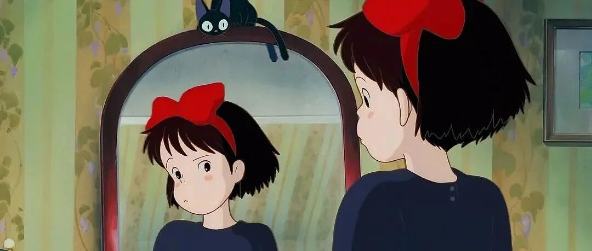

我是如何存下100万的？
点击关注 秋秋很开心

大家好，我是秋秋呀～
很多人会好奇，我是如何存下第一个100万的？
其实存款百万第一步，最难的是那50万，我是这样开始的。
🪐
大学毕业第一年，存款20w。
收入组成：
1、大学期间做代课、卖资料，存下5万。
2、大学毕业做编导，朝9晚6，月薪1w，存下12万。
3、下班后写稿+剪视频，一个月6000，用于生活费开销。
大学期间，我做过围棋老师，一个月2000～3000，去掉生活费1000，还能存下一半。
大四考研成绩还行，就把我的考研资料、笔记卖了，也赚了一点钱。
所以我来北京之前，手里差不多有5万。
来北京之后，我发现5万在这里，真的杯水车薪。
只能趁着暑假先去找个工作，就做了编导。
那时和同学住一间屋，房租+生活费一月不到4000，所以工资+兼职的钱不仅够花，还能存下很多。
这一年存下的15w对于我来说，就是能支付我研究生期间学费+生活费了！
虽然不是很多，但心里多少也有点底气。
很多人会好奇兼职怎么找的，我也不藏着掖着。
是我第一份工作辞职要回上学的时候，公司说线上写稿子剪片子也行，给我按条付钱的。
后来一直到再出去工作，这个兼职就一直做下去了。
🪐
大学毕业第二年，我换工作了，存下35万。
收入组成：
1、工资，全部存着，我的理念就是不花这个。存款+20w。
2、兼职，继续做着，一条视频剪辑快600块钱，周末剪2条。上班路上我就写稿子，去掉生活费，存款+2w。
3、下半年开始做自己的账号，半年20w粉丝，公众号5万粉，存款+10w。
4、理财收益这时候体现出来了，存款+3w。
这一时期我的工资上涨了，从年薪12万到年薪20万。
跳槽去了一家我很喜欢的公司，我现在关系最好的朋友、最喜欢的同事、最崇拜的领导，都是这家公司的。
不仅仅是收入增加，在这里我要一个人要负责整个账号。
从写、到拍、到剪，从0到1能自己一个人做一个账号，都是在这修炼的本领。
比较辛苦的是兼职，因为上班很累费脑子，周末还不能闲着、还要经常去上课、写作业。
如果仅仅是靠工资，我可能一年存个10多万。
但我也不完全赞成兼职和副业，如果和你本身的爱好、职业发展方向背道而驰，真的会因小失大。
这一时期存款全靠毅力，现在让我一个人做那么多事，我肯定完成不了。
🪐
说完55万的存款经历，后面45万反而相对比较简单。
去年理财就赚了有8万。
找到一件喜欢的事，并把它做大，平台入驻、流量主等收益也有很多。
前面50万存款，我写的比较详细，是因为这段经历，也许更有相似性和共鸣性。
从比较平凡的打工人走到现在，是每个人都能复制的过程。
大老王问过我：你觉得靠理财、真的能实现财富自由嘛？
我说本金多了，才有意义。
现在告诉你，怎样一年赚50万、70万没有意义（我也不会）。
因为从0到1，积累本金的过程，很多人都做不到。
而钱好像也有惯性，钱越多、钱就越好赚。
我存款的路子更像是一段苦日子，不是那种靠大学生创业、卖游戏皮肤、做代理等赚到的第一桶金的。
我的路子可能很苦、很笨，所以你们考虑要不要去学习。
至于心路历程，改天想再写一篇。
因为有了那种心态，你们才能理解我为什么能一鼓作气存钱。
共勉。
往期精彩内容：
作者介绍：
秋秋，95后自媒体女孩，极简生活、fire运动践行者。24岁裸辞、现在靠写作理财为生。希望能发现学习、成长、生活中的小美好，与你分享～

原创文章，转载请告知本人并标注来源
工作联系：17865514429 （微信）
请注明来意 :)
@小红书、抖音、快手：秋秋很开心
喜欢记得星标，让我们一起成长